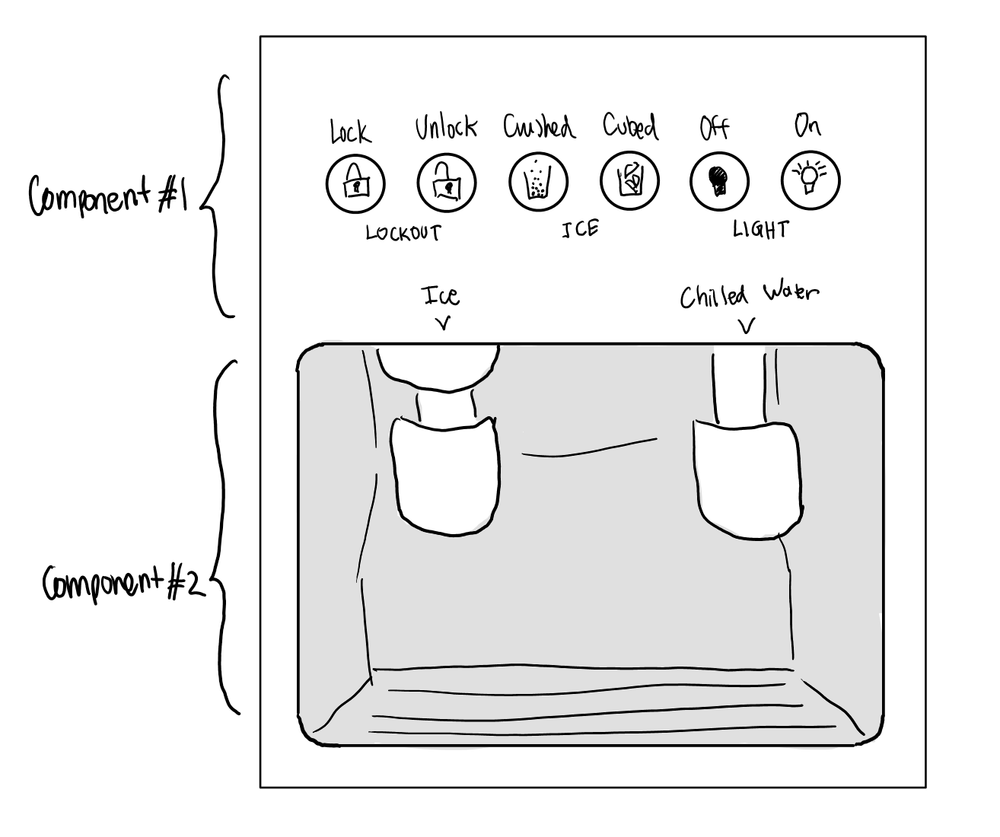

The interface is located on the front of the refrigerator and can be
divided into two main components.
The top component contains small text descriptors accompanying
a row of buttons, each for a different function: locking and
unlocking, dispensing crushed and cubed ice, turning on and off the
light.
The bottom component is the open compartment with two spouts
where ice and chilled water are dispensed when their respective levers
are pushed.
Notable Observations
-
Users gravitate toward the Ice buttons and chilled water
dispenser, and mostly seem to use the interface smoothly without
issue (regardless of whether the function actually works properly)
-
The Lockout buttons are rarely used, and the Light buttons are
sometimes used and forgotten about
-
Some users may accidentally attempt to press areas of the
interface that are not buttons
Some users (who possibly have not used the interface before) will
spend a small amount of time observing the interface, and proceed to
use it without issue.
Due to the slow speed of the water system, and unreliability of the
ice dispenser, some opt to use other options nearby such as the
sink, water pitchers, ice trays, etc. (often switching while in the
middle of using the dispenser)
Interview Takeaways
How difficult do you find it to decipher the text and icons on the
interface and understand what the functions are?
-
Overall, icons and text descriptors make most functions fairly
clear and intuitive. However, the lock/unlock buttons are unclear
What is your opinion about the organization of the components of the
interface?
- Classic organization that generally makes logical sense
-
Three categories "Lockout", "Ice", and "Light" are denoted by
three text descriptors, but could be more visually divided
(Dividing lines, extra spacing, etc. could be used to stagger)
Which function do you find yourself using the most vs. the least,
and why?
-
Most popular answer was chilled water, followed by crushed ice,
while other functions like Lockout are rarely used (partly due to
confusion about lock function)
What is the greatest issue you have encountered with the interface?
-
Most popular issue was the slow speed of the dispenser (less of a
UI issue)
-
Dispenser component is very hidden--filling a bottle with a narrow
opening is difficult and water often misses